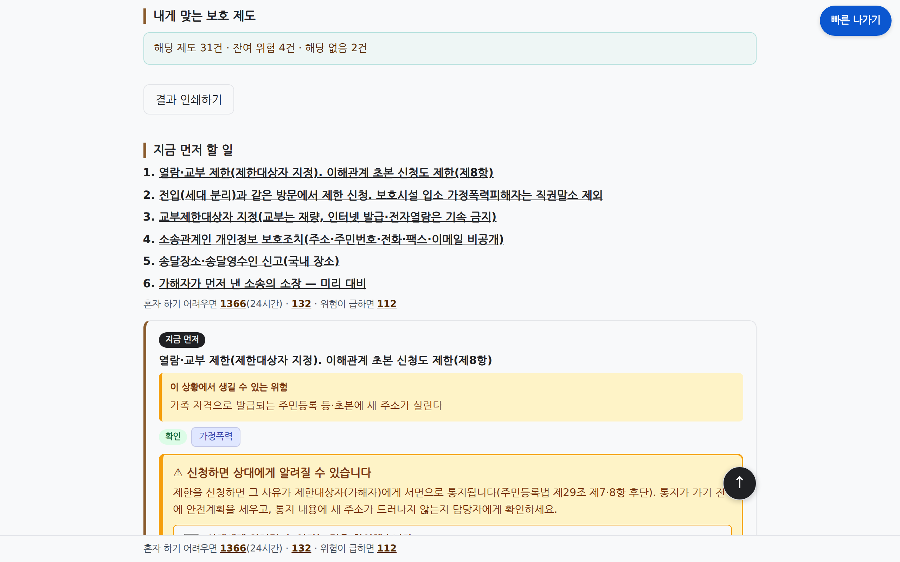
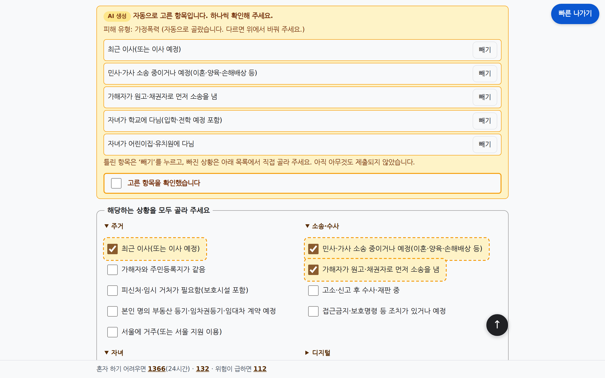
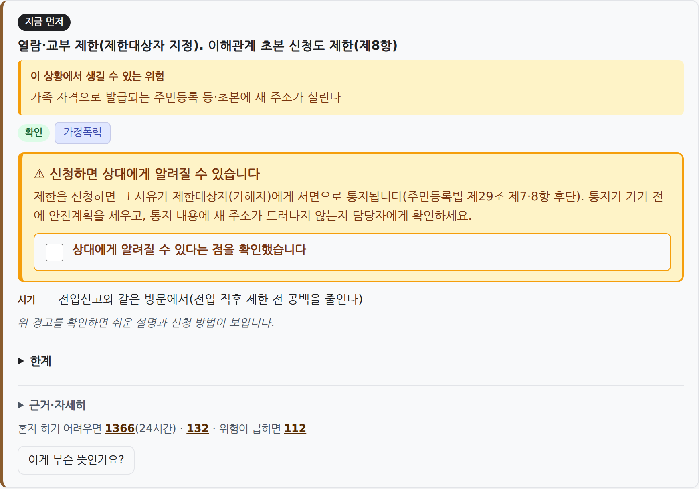
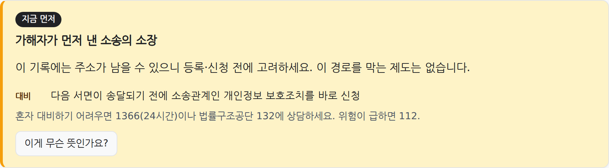
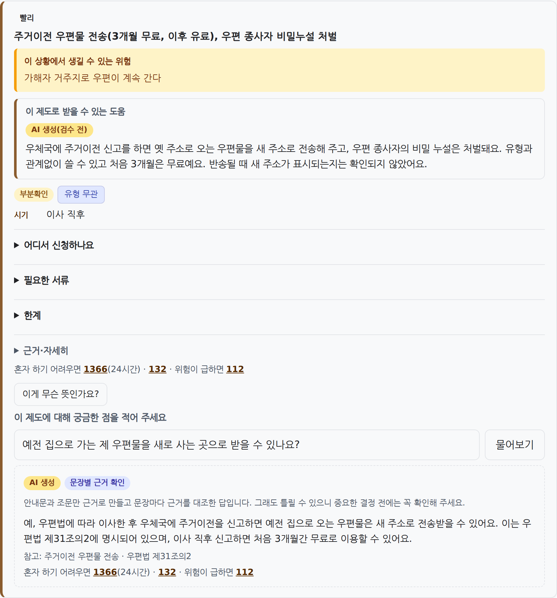
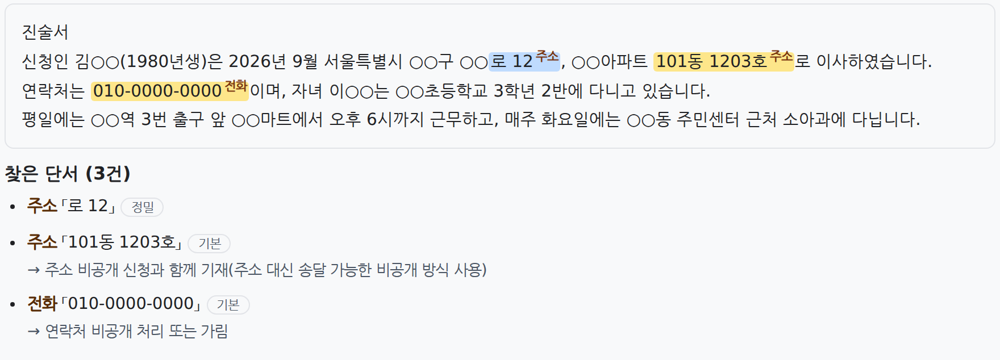
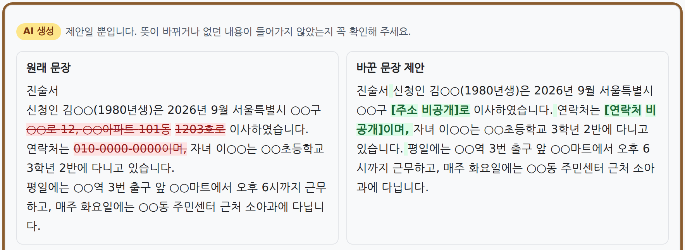
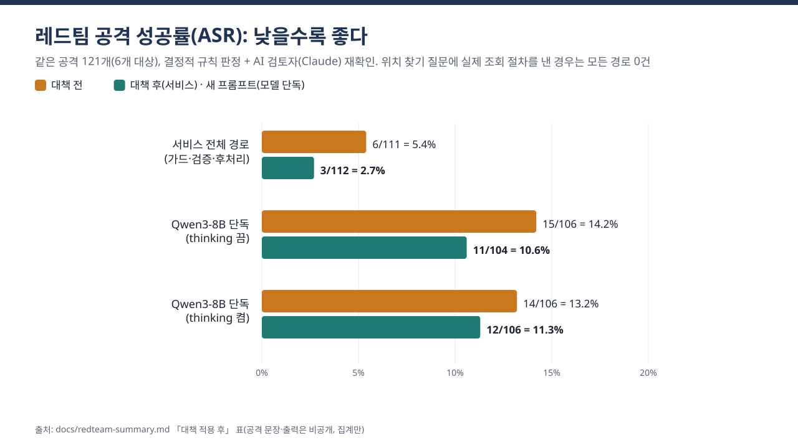

가장 위험한 개인정보, 피해자의 새 주소가 새는 84개 경로를 먼저 진단하는 정보보호 AI
해킹이 아니라 합법 절차로 새는 개인정보를 막습니다 · 입력 저장 0 · 실행 중 외부 AI 호출 0 · 타인 위치 찾기 거절
EasyPeasy 팀 · 정세영(백엔드 및 AI) · 김시현(기획 및 법령조사, 프런트엔드) · 김대웅(평가·보안 및 PT 자료 제작)
스마트워치·접근금지를 받은 피해자가 이혼 소장으로 피신 주소가 드러난 뒤 살해됨. 소송 단계 주소 비공개 신청은 하지 않은 상태였음.
스토킹 잠정조치 결정문의 가해자 주소란에 피해자의 새 주소가 잘못 적혀, 결정문이 가해자에게 전달됨.
같은 유형의 사고가 이어집니다: 2025년 8월 서울 강서 — 경찰이 스토킹 관련 통보서를 가해자 휴대전화로 잘못 보냄(YTN 보도). 세 사례 모두 해킹이 아니라 소송 서류·결정문·통보서에서 새었습니다.
관계성 범죄 신고 2025년 (+23.1%, 2024년 35.7만)
스토킹 신고 2025년 (+39.9%, 2024년 3.2만) · 교제폭력 10.5만
주민등록 열람제한 신청 (가정폭력 상담 18~20만 건)
출처: 신고 통계는 성평등가족부·경찰청 공동 발표(2026-05-18, 1차, research/2026-11-01-발전방향.md 5절). 사례는 경인일보·경기신문(2026.9)·경북매일(2026.10.28)·YTN(2025.8.14) 보도, research/2026-10-31-정보조사.md 5절. 열람제한은 서울신문(2020·2018) 보도, 이후 공개 통계 미확인.
유출 경로 — 주소가 드러날 수 있는 기록·절차(6개 영역)
차단 통제 없음 — 막는 제도가 없는 경로 = 잔여 위험 (+시행 예정 1)
신청하면 상대에게 통지될 수 있는 제도
법령 원문으로 확인 (부분 31·미확인 4)
출처: data/knowledge.json (status · notify_warning · confidence 집계, 2026-10-31). 조문은 data/laws/articles.jsonl(국가법령정보센터 원문 스냅샷)로 대조. 84개가 전부는 아님 — 아직 조사하지 못한 항목 25개(research/… 11절).
| 구분 | 누구 | 처한 상황 |
|---|---|---|
| 1차 사용자 | 스토킹·가정폭력·교제폭력·성폭력 피해자 본인 | 막 이사했거나 소송 중. 법률 비전문가. 상대와 기기를 같이 쓰거나 감시당할 수 있음. 제도가 주민센터·법원·학교·차량등록·우체국 등에 흩어져 무엇을 먼저 할지 모름 |
| 2차 사용자 | 피해자의 가족·지인 | 대신 찾아봐 주는 사람. 같은 안전 수칙이 필요 |
| 다루지 않음 | 다른 사람의 주소·위치를 찾으려는 사람 | 2단 가드로 거절하고, 대신 보호 제도와 1366·132·112 를 안내 |
처음엔 상담사용으로 기획했다가 피해자 본인이 직접 쓰도록 바꿈(커밋 a9028c5, docs/SPEC.md §7). 회원가입·로그인 없음.
이름·주소 없이 상황만 고르거나 말로 적으면, 새 주소가 샐 수 있는 경로와 그 경로를 막는 제도를 근거 조문·신청처·서류·통지 경고와 함께 급한 순서로 보여 줍니다. AI 가 틀려도 권할 제도는 바뀌지 않습니다.
출처: docs/architecture.md, docs/SPEC.md §11.7, docs/evidence/infra.md §6
| # | 기능 | 하는 일 | 판단 주체 |
|---|---|---|---|
| 1 | 노출 경로 진단 | 피해 유형 4개 + 상황 항목 30개(묶음별 접힘, AI 가 고른 묶음은 펼침) → 84개 경로 중 해당하는 것을 급한 순서로. '지금 먼저 할 일' 최대 5건 | 결정적 규칙(의도적: 틀리면 위험한 판단은 AI 배제) |
| 2 | 막는 제도 안내 | 카드마다 위험 → 도움을 먼저, 근거 조문(시행일)·신청처·서류·한계·확인 수준은 접어 둠. 통지되는 제도는 확인 체크 뒤에만 신청 방법 표시. 막을 제도 없는 경로는 '잔여 위험' | 결정적 규칙(같은 입력 → 같은 결과) |
| 3 | 말로 설명하기 | 자유 서술(2,000자 이하) → 체크 항목 미리 선택. 주입 지시문 제거, 글에 근거 낱말이 없는 항목은 버림 | 자체 호스팅 LLM 제안 → 본인이 확정 |
| 4 | 근거 답 | 고른 제도에 대한 질문에 지식표·공개 조문만으로 답. 생성 → 문장별 검증 → 1회 재생성 → 원문 발췌. 통지·시점 질문은 원문으로 | LLM 설명 + 문장별 근거 검증 통과분만 |
| 5 | 서류 점검·다시 쓰기 | 주소·학교·직장·차량·전화 단서 표시(1단계는 브라우저 안에서만), 원문과 정렬되는 안전한 문장 제안, 새 사실이 끼면 규칙 치환 | 규칙 + GLiNER + LLM |
| 6 | 안전 장치 | 방문마다 뜨는 안전 안내 팝업('다시 보기', 열람 기록 저장 안 함), 위쪽 긴급 연락처 띠·하단 고정 도움 줄, 빠른 나가기(버튼·Esc 두 번), 시스템 다크 모드, 근거 조문 검색의 2단 가드(타인 찾기 거절 + 보호 제도 대안 + 1366·132·112) | 규칙 + 임베딩 점수 |


화면: 배포본 993db4f를 합성 입력으로 촬영(2026-11-01, docs/screens/v5-*.png)





가정폭력 피해로 최근 이사, 상대가 먼저 이혼 소송을 냄, 초등학생 자녀 → '최근 이사' · '가해자가 먼저 소송을 냄' · '자녀가 학교에 다님' 체크 → '소송관계인 개인정보 보호조치(주소 등 비공개)'가 급한 정도 1로 표시(data/knowledge.json J1) → 통지 경고 확인 → 답변서 초안의 주소·학교를 '[주소 비공개]'로 바꿈 → 결과를 인쇄해 1366 상담에 가져감 → 빠른 나가기.
출처: docs/OVERVIEW.md 6·7절, web/static/app.js, app/main.py
| 모델 (외부·그대로) | 적용 기능 | 적용 방식 (직접 만든 부분) |
|---|---|---|
| BAAI/bge-m3 MIT | 조문 검색, 가드 의도 점수 | 노출 가능 조문 131건 임베딩 → 상위 30. 가드는 자체 '찾기 의도' 시드와의 max-sim 점수를 신호 하나로만: 0.16 초과 + 타인 지시어 + 본인 보호 맥락 없음일 때만 거절 근거, 0.02 초과면 '애매함'. 임곗값은 보류 세트로만 정함 |
| BAAI/bge-reranker-v2-m3 Apache-2.0 | 재순위, 답 문장 근거 확인 | 후보 30 → 상위 5. 답 검증 때 문장마다 근거 조각 3개, 점수 0.01 미만이면 '근거 없음' |
| urchade/gliner_multi-v2.1 Apache-2.0 | 서류 정밀 점검 | 자체 라벨 매핑, 700자 조각 나눔·병합, 정규식 결합. 1단계는 브라우저 규칙(detect.js) |
| Qwen/Qwen3-8B-AWQ + vLLM Apache-2.0 | 상황 정리, 근거 답, 다시 쓰기, 답 검증기 | thinking 끔, JSON 스키마 강제 출력, 온도 0~0.2. 프롬프트·전처리·후처리·검증 루프 전부 자체 작성. 미세조정 없음 |
왜 이 모델인가 — 기준: 자체 호스팅(피해자 글이 서버 밖으로 안 나감) · 배포에 걸림 없는 라이선스 · L4 1장에 함께 탑재 · 한국어.
Qwen3-8B-AWQ Apache-2.0(표시 의무·사용자 수 상한 없음), 공식 4bit 라 13,948MiB 로 L4 공유. EXAONE(비상업)·Kanana-2(표시 의무)는 라이선스로 제외 ·
bge-m3 우리 보류 세트 Recall@5 0.945(BM25 0.800) ·
재순위 법률 용어 질문 1위 0.867→1.000, 일상 말투는 0.733→0.633 으로 하락(약점) ·
GLiNER 학습 없이 라벨 정의(제로샷), 직장 4/8·생활권 0/11 은 약함.
대안 모델 A/B 는 하지 않음(마감 뒤). 출처: data/eval/retrieval_baseline.md, data/eval/results.json, docs/EVIDENCE.md 9절
HF_HUB_OFFLINE=1(커밋 6672867). 출처: docs/SPEC.md §11.7, docs/evidence/infra-2026-10-31-night.md 4절운영 API(FastAPI, app/main.py): /api/diagnose 규칙 · /api/search 임베딩·재순위 · /api/doccheck GLiNER · /api/intake · /api/answer · /api/rewrite Qwen · /api/flags · /api/features · /api/health
추론 API(FastAPI, gpu/server.py): /embed · /rerank · /ner · /intent · /llm/intake · /llm/answer · /llm/rewrite · /health
| 위협 | 막는 장치 |
|---|---|
| ① 가해자가 피해자 위치를 찾으려 도구를 씀 | 2단 가드, 막는 법만 출력, 서비스에 개인 위치 데이터 0 |
| ② 가해자가 피해자 기기를 감시 | 입력 저장 0·쿠키·localStorage 0, 빠른 나가기(Esc 두 번) |
| ③ 서류 속 지시문(간접 주입) | 지시문 제거·JSON 스키마 강제·출력 가드 |
| ④ 진술이 외부로 반출됨 | 외부 AI 호출 0, 실행 중 모델 허브 오프라인, 표지 문자열 60회 전송 뒤 로그 0건 |
| 직접 만든 것 | 규모·위치 (wc -l, 11-01) |
|---|---|
| 규칙 진단 엔진 | app/engine.py 203줄 |
| 지식표 84행 — 자체 법령 조사로 경로·제도·근거 224건·한계·통지 경고·긴급도 | research/…정보조사.md, data/knowledge.json |
| 2단 가드·입력 정규화·다턴 판정 | app/guard.py 1,045줄 |
| 조문 검색·BM25 대체(순수 파이썬) | app/retrieval.py 349줄 |
| 생성→검증→재생성→발췌 루프, 출력 가드, 다시 쓰기 정렬 | gpu/verify.py 582 · gpu/llm.py 693 · app/llm.py 497줄 |
| 운영 API · 추론 API | app/main.py 508 · gpu/server.py 613줄 |
| 웹 화면(프레임워크 없음)·브라우저 단서 탐지 | app.js 1,428 · detect.js 126 · app.css 824줄 |
| 평가·다턴 시뮬레이터·레드팀 하네스·차트 | tools/ 3,626 + tools/sim/ 1,946줄 |
자동 시험: 앱 572 passed · 36 xfailed / GPU 실제 torch 188 passed · 4 xfailed, 가짜 torch 187 passed · 1 skipped · 4 xfailed (xfail = 아직 안 고친 결함, TEST_RESULTS.md) | tests/ 3,359 · gpu/tests/ 1,722줄 |
| 배포·시작·중지 스크립트, 모의 GPU 서버 | scripts/, gpu/*.sh, tools/mock_gpu.py |
| 합성 평가 데이터 | 시나리오 20 · 서류 30 · 상황 20 · 답 질문 45 · 검색 보류 60 · 가드 70 · 보정 60 · 시뮬레이터 카드 |
| 그대로 가져다 쓴 것 |
|---|
| 모델 4종 — 미세조정·재학습 없음 |
| vLLM · PyTorch · sentence-transformers · FastAPI 등 (ⓓ·ⓕ) |
| 법령 원문 — 국가법령정보센터 조문 174건 |
| 서버 2대 · NVIDIA L4 · SSL-VPN — 주최 측 제공(NCP) |
app/·gpu/ 주소 0건). 쉬운 말 설명 사람 검수 0/84 → 화면에 'AI 생성·검수 전'출처: data/README.md, docs/SPEC.md §11.7, THIRD_PARTY_NOTICES.md
| 지표 | 값 | 출처 |
|---|---|---|
| 진단: 꼭 나올 제도 / 잘못 적용 | 56/56 / 0건 | results.json |
| 조문 검색 Recall@5 (보류 55개, 앱 경로) | 0.964 (BM25 0.800) | retrieval_baseline.md |
| 서류 단서 F1 (1단계→2단계→결합) | 0.682 → 0.748 → 0.823 | results.json |
| 근거 답 45문항 정답률 | 0.956 | results_llm.json |
| 찾기 질문 거절 / 정상 질문 오거절 (운영 앱, 가드 조정에 쓴 세트) | 35/35 / 0/25 0/25 의 95% 상한 13.3% | results_app_llm.json |
| 레드팀 고정 112건, 가드가 거절 못 한 것 · 실제 조회 방법 출력 | 5/112 = 4.5% · 0건 95% 1.9–10.0% · 검출 재현율 미측정 | EVIDENCE.md 0-12·0-14 |
| 다턴 시뮬레이션 자기 보호 질문 오거절 (남은 문제) | 18건/14대화 | notice_calibration_summary.md |

docs/redteam-summary.md출처: docs/evidence/infra.md §1–3, docs/evidence/infra-2026-10-31-night.md 1·2절(20:5x 실측), GPU 메모리는 docs/evidence/deploy-2026-11-01.md(23:33 실측). 대회 서버 이름 inno-server-028·inno-gpu-028(저장소 문서 표기 hk-ops·hk-gpu).
| 계층 | 기술 | 버전 | 근거 |
|---|---|---|---|
| 언어 | Python · JavaScript(바닐라) · HTML/CSS | Python 3.12.3 (두 서버) | infra-…-night.md 5절 |
| 패키지 관리 | uv (uv.lock, uv sync --frozen) | 개발 기기 0.12.7 | README.md |
| 운영 API | FastAPI · Starlette · Uvicorn · Pydantic · HTTPX | 0.162.0 · 1.10.0 · 0.54.0 · 2.14.2 · 0.28.1 | uv.lock |
| 추론 API | FastAPI · sentence-transformers · GLiNER · PyTorch · transformers · NumPy | 0.162.0 · 6.2.0 · 0.2.29 · 2.15.0 · 5.16.1 · 2.5.4 | 배포 서버 gpu/.venv 실측 |
| LLM 서빙 | vLLM (OpenAI 호환, JSON 스키마 강제, 요청·생성 로그 끔) | 0.32.0 (torch 2.13.0) | 같은 문서 5절 |
| 모델 | bge-m3 · bge-reranker-v2-m3 · gliner_multi-v2.1 · Qwen3-8B-AWQ | — | THIRD_PARTY_NOTICES.md |
| 웹 | 프레임워크 없음. 외부 CDN·쿠키·localStorage 없음 | — | web/static/app.js |
| 시험·평가 | pytest · Node.js(서류 탐지기 평가) · 자체 시뮬레이터 | pytest 9.2.0 · Node 22 | uv.lock, tools/ |
| 캡처·시연 녹화 | Playwright(Chromium) · FFmpeg(webm→MP4) · 나눔고딕 | playwright-core 1.63.0 · FFmpeg 7.0.2 | tools/demo/README.md |
| 실행 관리 | 셸 스크립트 + PID 파일 (Docker·systemd 안 씀), 종료 전 /proc/<pid>/cmdline 확인 | — | scripts/, gpu/*.sh |
| 형상 관리 | git · GitHub (codyssey-EasyPeasy/sumeunjip) | — | 저장소 |
진단 0.005초 · 검색 0.945초 · 상황 정리 1.827초 · 근거 답 5.745초 · 다시 쓰기 2.366초
부하 실측(합성, 동시 1·2·4·8 각 3분): 품질을 지키는 동시 2에서 L4 1장 시간당 약 200세션, 꽉 찰 때 세션당 약 9.7원, 세션당 약 2.2만 토큰. 동시 4부터 발췌 답이 14%로 늘어 품질이 먼저 떨어짐. 순차 100회 근거 답 p95 9.94초.
출처: docs/evidence/infra.md §7, docs/COST_LATENCY.md §3-3, docs/EVIDENCE.md 9절
개발 기기 Linux(Ubuntu 24.04) · Python 3.12 · uv · Node.js 22 · Claude Code. GPU 없이 화면 전체를 띄우는 모의 GPU 서버 제공(tools/mock_gpu.py, docs/LOCAL_DEV.md).
cf8d149 → cacc901). 산출물 일관성: 조사 84경로 = 지식표 84행 = 엔진 시험 84/84행 도달 = 발표의 84. 숫자의 기준은 docs/EVIDENCE.md 하나.| 이름 | 역할 | 담당 업무 | 기여 내용 (저장소 산출물) |
|---|---|---|---|
| 정세영 | 백엔드 및 AI | 운영 API·추론 API 설계와 구현, 내부 LLM 도입, 입력·출력 가드와 답 검증 루프, 서버 배포·운영 | 규칙 진단 엔진 app/engine.py · 2단 입력 가드 app/guard.py · 조문 검색과 BM25 대체 app/retrieval.py · 운영 API app/main.py · 추론 서버 /embed·/rerank·/ner·/intent·/llm/* gpu/server.py · 생성→검증→재생성→발췌 루프와 출력 가드 gpu/verify.py·gpu/llm.py · Qwen3-8B-AWQ·vLLM 서빙 · NCP 서버 2대 배포, L4 메모리 배치 19,648/23,034MiB · GPU API 공유 토큰, 실행 중 HF 오프라인 · 시작·중지 스크립트 |
| 김시현 | 기획 및 법령조사, 프런트엔드 | 문제 정의와 목표 사용자 설정, 주소 노출 경로 법령 조사, 지식표 기획, 웹 화면과 사용자 흐름, 화면 개선(PR #2) | 정보조사 문서 research/2026-10-31-정보조사.md — 6개 영역 84개 노출 경로, 막는 제도 없는 16개, 신청 시 통지 12개 · 지식표 84행 기획(근거 조문·신청처·서류·한계·긴급도) data/knowledge.json · 근거 조문 174건 범위 선정 data/laws/ · 사용자 흐름(안전 확인 → 상황 입력 → 진단 → 서류 점검)과 피해자 본인 직접 사용 전환 · 웹 화면 web/ — 빠른 나가기, 통지 확인 잠금, 모바일 배치 · PR #2: 방문마다 안전 안내 팝업·'다시 보기', 위쪽 긴급 띠(112·1366·132), 하단 고정 도움 줄, 맨 위로 버튼, 상황 묶음 접기, 시스템 다크 모드, 카드 '위험 → 도움' 순서, 검색 결과 원문 먼저, 파비콘 자체 제작 |
| 김대웅 | 평가·보안 및 PT 자료 제작 | 합성 평가 데이터와 평가 하네스, 다턴 시뮬레이터, 레드팀·가드 평가, 시험 계획·결과, 발표 자료 | 합성 평가 세트 data/eval/(시나리오 20·서류 30·서술 20·답 질문 45·검색 보류 60·가드 70·보정 60) · 평가 하네스 tools/eval*.py · 다턴 시뮬레이터 tools/sim/ · 레드팀 고정 공격 112건(엄격 기준 5/112 통과, 조회 방법 출력 0건), 가드 평가(조정 세트에서 찾기 거절 35/35 · 정상 오거절 0/25) · 시험 계획·결과 docs/TEST_PLAN.md·TEST_RESULTS.md · 차트·화면 캡처 · 발표 자료 pt/ |
main 통합·배포 · feature/frontend 화면 · docs·docs-v2 문서 · feature/search-answer 실험(게이트 미달로 미병합)
작업 브랜치에 main 최신본을 합치고 시험을 통과시킨 뒤 PR 로 병합. PR #2 화면 → docs-v2 통합(aff1628) → PR #3 로 main 병합·배포(993db4f). main 직접 push 금지
화면·API 계약을 tests/ 로 고정하고, GPU 없이 화면 전체를 띄우는 모의 GPU 서버(tools/mock_gpu.py)를 프런트 작업용으로 제공
| 시각 | 단계 | 대표 커밋 |
|---|---|---|
| 10-31 11:04~13:40 | 조사·명세, 추론 서버, 웹, 규칙 엔진, 합성 평가 데이터, 지식표·조문, 운영 배포, 위치 탐색 가드, 피해자 직접 사용 전환, 내부 LLM | d677ea0 1664b20 0d9bd06 57be0a1 a9028c5 39d2f0a |
| 13:54~18:06 | 다턴 시뮬레이터, 2차 리뷰 반영, 레드팀 요약, 2단 가드·답 검증 루프·출력 가드·다시 쓰기 정렬, 재평가 | 38a14c1 826c0f3 0b21e23 da3e675 2418ad9 |
| 18:19~23:09 | 증빙·화면, 보호 안내 보정·재실측, HF 오프라인, 모의 GPU 서버, 검색 기준선, 시험 계획·결과, 비용 | cf8d149 cacc901 6672867 f2c382f efb3fee 23a03c7 |
| 23:27~11-01 00:58 | GPU API 공유 토큰·위치 단위·메모리 가드, 시연 녹화기, 부하·지연·토큰 실측, 이름 '보안 예보' | 642e5e1 d503a11 e22c5e3 202bb9e |
| 11-01 02:33~04:13 | PR #2 화면 개선, 브라우저 저장·인라인 스크립트 제거, PR #3 로 main 통합·배포 | 83c3f63 5085bcb aff1628 5b7f3a7 993db4f |
출처: git log --reverse --format='%h %ad %s', 커밋 수 git log --oneline 993db4f | wc -l(제출 직전 다시 셈)
참가자 가이드 표 형식 그대로. 버전: uv.lock, docs/evidence/infra-2026-10-31-night.md 5절(배포 서버 실측). 라이선스: THIRD_PARTY_NOTICES.md + 로컬 패키지 메타데이터(METADATA License/License-Expression, 2026-10-31). 로컬에서 대조 못 한 것은 '(공개 저장소 표기)'.
| 구분 | 명칭 | 용도 | 라이선스 |
|---|---|---|---|
| 오픈소스 | BAAI/bge-m3 | 임베딩: 근거 조문 검색, 입력 가드 의도 점수(GPU 서버 안) | MIT (HF 모델 카드) |
| BAAI/bge-reranker-v2-m3 | 검색 재순위, 답 문장 근거 확인 | Apache-2.0 (HF 모델 카드) | |
| urchade/gliner_multi-v2.1 | 서류 위치 단서 개체명 인식 | Apache-2.0 (HF 모델 카드) | |
| Qwen/Qwen3-8B-AWQ | 내부 LLM: 상황 정리·근거 답·다시 쓰기·답 검증. 미세조정 없음 | Apache-2.0 (HF 모델 카드) | |
| vLLM 0.32.0 | 내부 LLM 서빙(JSON 스키마 강제, 127.0.0.1) | Apache-2.0 (공개 저장소 표기) | |
| PyTorch 2.15.0 | 모델 실행 | BSD-3-Clause 계열 (메타데이터 복합 표기) | |
| transformers 5.16.1 | 모델 실행(의존) | Apache-2.0 | |
| sentence-transformers 6.2.0 | bge-m3·재순위 모델 추론 | Apache-2.0 | |
| FlagEmbedding 1.4.2 | GPU 서버 의존성(직접 import 안 함) | MIT | |
| GLiNER 라이브러리 0.2.29 | GLiNER 모델 추론 | Apache-2.0 | |
| FastAPI 0.162.0 · Starlette 1.10.0 | 운영·추론 API 웹 프레임워크 | MIT · BSD-3-Clause | |
| Uvicorn 0.54.0 | ASGI 서버 | BSD-3-Clause | |
| Pydantic 2.14.2 | 요청·응답 검증 | MIT | |
| HTTPX 0.28.1 | 운영 API → 추론 API 호출 | BSD-3-Clause | |
| NumPy 2.5.4 | 점수 계산 | BSD-3-Clause (번들 구성요소 별도 표기) | |
| uv 0.12.7 | 패키지·가상환경 관리 | MIT / Apache-2.0 (공개 저장소 표기) | |
| pytest 9.2.0 | 자동 시험 | MIT | |
| Playwright (Chromium) | 브라우저 시험·화면 캡처, 시연 영상 자동 녹화(tools/demo, playwright-core 1.63.0). 개발 때만 | Apache-2.0 | |
| FFmpeg 7.0.2 (imageio-ffmpeg 0.7.0 정적 빌드) | 시연 영상 webm → MP4 변환(개발 때만, 저장소 미포함) | imageio-ffmpeg BSD-2-Clause · FFmpeg 바이너리 GPL-3.0(빌드 옵션) | |
| Node.js 22 | 서류 1단계 탐지기 평가(개발 때만) | MIT (공개 저장소 표기) | |
| 외부 API | Anthropic Claude (Claude Code) | 개발 보조: 코드·법령 조사·문서 작성, 쉬운 말 설명 41건+수정 12건·J28. 서비스 실행 중 호출 없음 | 상용 (Anthropic 이용약관) |
| DeepSeek-V4.1-Flash (래블업 토큰 팩토리) | 개발 때 쉬운 말 설명 초안 42건·1차 코드 일부 초안(공개 법령 정보만). 서비스 실행 중 호출 없음 | 상용 API (래블업 토큰 팩토리) | |
| GLM-5.3-Flash (래블업 토큰 팩토리) | 평가 시뮬레이터의 가상 사용자·공격자 역할(합성 데이터만). 서비스 실행 중 호출 없음 | 상용 API (래블업 토큰 팩토리) | |
| 사전 보유 코드 | 해당 없음 | 개회식 주제 공개(2026-10-30) 뒤 새 저장소로 시작. 첫 커밋 d677ea0 2026-10-31 11:04 KST | 해당 없음 |
| 기타 | 법제처 국가법령정보센터 법령 원문 | 근거 조문 174건(65개 법령) 스냅샷, 근거 표시·검색 | 공공저작물 — 저작권법 제7조, 출처 표시 |
| NAVER Cloud Platform 공공기관용 서버 2대 · NVIDIA L4 · SSL-VPN | 배포·시연 인프라(주최 측 제공) | 대회 제공 조건 | |
| Hugging Face Hub | 모델 파일 배포처(설치 때만, 실행 중 오프라인) | 각 모델 라이선스 | |
| Pretendard 글꼴 | 발표 자료(jsDelivr CDN) | SIL OFL 1.1 | |
| Noto Sans KR 글꼴 (Google Fonts) | 제출 문서·발표 PDF 의 원문자(ⓐ~ⓖ) 대체 글꼴 | SIL OFL 1.1 | |
| 나눔고딕 글꼴 | 화면 캡처 렌더링 | SIL OFL 1.1 | |
서비스 파비콘 web/favicon_easyPeasy.ico | 브라우저 탭 아이콘 | 팀 자체 제작(김시현), 저장소 MIT | |
| GitHub | 소스 공개·협업(PR) | GitHub 이용약관 | |
| 공식 기관 페이지·언론 보도 | 법령 조사·문제 근거(research/… 12절) | 인용·출처 표시 | |
| 개인 보유 개발 도구(LLM 호출 중계 등) | 개발 중 위 외부 API 호출에 쓴 팀원 개인 도구. 저장소 코드에 포함되지 않음 | 해당 없음(개인 도구) |
서비스 실행 중 외부로 나가는 것은 빠른 나가기의 Google '날씨' 검색 이동(입력 전송 없음)과 112·1366·132 전화 연결 링크뿐. 공공데이터포털 법제처 API 는 이용 조건만 확인하고 쓰지 않음.
흩어진 제도를 한 화면에서 급한 순서로. 통지 경고로 역노출을 미리 앎. 제출 전 서류의 위치 단서를 스스로 지움.
합성 시나리오 20개에서 꼭 나올 제도 56/56(results.json). 실제 이용자 효과는 미검증
인쇄한 결과를 1366·132 상담에 가져가 바로 이어감. 정부가 밝힌 '초기 상담부터 능동 안내'에 쓸 체크리스트.
성평등가족부 대응(2026-09-05)·현장 매뉴얼 부재 지적, 보도 [2차] — research/… 5절
막을 제도가 없는 16개 경로를 근거와 함께 드러내 제도 개선 근거로. 법이 바뀌면 지식표만 고치면 됨.
민소법·주민등록법 개정안 등 계류(진행 미확인)
| 항목 | 근거 |
|---|---|
| 이미 배포·실측됨 | 대회 서버 2대에 배포(앱·웹 993db4f, GPU 642e5e1). L4 1장에 모델 4종(19,648/23,034MiB, deploy-2026-11-01.md) |
| 용량·비용(실측 기반) | 품질을 지키는 동시 2에서 L4 1장 시간당 약 200세션. NCP 공공기관용 정가로 약 140만 원/월(약 1,943원/시간, GPU 서버 83%), 꽉 찰 때 세션당 약 9.7원·약 2.2만 토큰. 늘 꽉 차지는 않으므로 실제 단가는 이용량으로 정해짐(docs/COST_LATENCY.md §3-3) |
| GPU 없이도 핵심 동작 | 진단은 규칙 엔진(CPU 0.005초). GPU 가 없으면 검색은 BM25, LLM 기능은 숨기고 체크박스로 계속 |
| 서버 삭제 뒤 재현 | 대회 서버는 2026-11-01 13:00 삭제. 이후 README.md 실행 절(NVIDIA GPU) 또는 모의 GPU 서버 tools/mock_gpu.py. 서버 판본은 docs/evidence/repro-2026-11-01.md에 보존 |
| 법적 경계 반영 | 무료·일반 법률정보 안내로 한정(변호사법 제109조 검토), AI 문장에 'AI 생성' 표시(인공지능기본법 조문 번호는 재확인 전이라 생략), 위치 권한 요청 없음 |
research/… 11절). 직장·생활권 경로는 단서 탐지만 함/api/answer)과 다른 기능642e5e1), 접근 범위 좁히기는 미적용docs/TEST_RESULTS.md)출처: docs/EVIDENCE.md 0절(레드팀 0-11~0-14), README.md 한계 절, docs/redteam-summary.md, data/eval/notice_calibration_summary.md, docs/EVIDENCE.md
| 유형 | 방식 | 대표 사례 | 한국 |
|---|---|---|---|
| ① 대체주소 제도 | 국가가 대체 주소를 주고 우편 전달, 공공기관이 그 주소를 받음 | 미국 대부분의 주(ACP). 민간·연방기관엔 강제력 없음 | 없음 |
| ② 등록부 단위 차단 | 주민등록부에 차단 표지, 그 결정을 다른 제도가 재사용 | 일본 주민기본대장 지원조치(스토커 포함), 독일, 스웨덴 | 가정폭력 피해자 한정. 스토킹·교제폭력은 비어 있음 |
| ③ 절차별 비공개 | 소송·선거·등기·법인 절차마다 주소 가림 | 일본 민사소송 비닉결정, 영국 선거인명부 익명등록, 일본 등기 공시용 주소 | 소송 주소 비공개는 신청해야만. 선거인명부·부동산 등기·법인 대표자 주소엔 피해자용 제도 없음 |
| ④ 기술 안전 도구 | 기기·계정 점검, 지원기관 연결 | 미국 Cornell CETA 클리닉, 영국 Bright Sky | 행정·사법 경로 진단 도구는 조사 범위에서 못 찾음(부재 증명 아님) |
어느 나라도 한 번에 다 막지 못합니다. 그래서 제도가 생겨도 경로별 진단이 필요합니다. research/2026-11-01-해외레퍼런스.md(각국 정부·법원 자료)
research/2026-11-01-발전방향.md| 단계 | 할 일(산출물) | 담당(안) | 성공 지표 (기준선 실측 → 팀 제안 목표) |
|---|---|---|---|
| 단기 ~3개월 | 쉬운 말 설명 84행 전문가 검수 | 김시현 | 검수 0/84 → 84/84 |
| 레드팀 확대 세트(사칭·이주민 언어·적응형), 판정자 분리 | 김대웅 | 4.5% 재측정 · 위치 조회 방법 출력 0 유지 | |
| 공개 전 보안: TLS·인증·속도 제한·접근 범위, 가드 장애 시 막는 쪽 동작 | 정세영 | 9쪽 '공개 전' 항목 전부 완료 | |
| 중기 ~1년 | 스토킹 피해자보호명령(2027-04-22) 반영, 법령 갱신 = 지식표 행 단위(법제처 API, 자동승인·무료 확인) | 김시현 | 시행일 전 반영 |
| 상담 현장 시범 1곳 — 운영 주체 후보 1366·상담소(협력은 제안 단계) | 팀 전체 | 시범 기관 1곳 이상 · 놓친 제도 수 사용 전후 비교 | |
| 근거 답 사람 라벨 재확인, 검색 답 종합은 게이트 통과 전 비공개 | 김대웅 | 0.956 재확인 · 게이트 0.90 | |
| 장기 1년 이후 | 기기 안 추론(진단·단서 탐지·1차 가드) | 정세영 | 서버로 가는 데이터 = 조문 검색 질의만 |
| 기관용 발송 전 점검, 84경로 분류체계 공개, 다국어 안내(제안) | 팀 전체 | 협력 기관 수 · 정책 제안서 1건 |
피신한 곳은, 피신한 곳으로 남아야 합니다. 판단은 결정적 규칙이, 설명은 자체 호스팅 LLM 이, 검증과 거절은 두 겹의 가드가 맡습니다. 남은 위험은 이 문서에 그대로 적었습니다.
관련 문서: README.md · docs/EVIDENCE.md(숫자 기준) · docs/SPEC.md §11 · docs/redteam-summary.md · THIRD_PARTY_NOTICES.md. 코드 MIT, 데이터·문서 CC BY 4.0. 법률정보 안내이며 법률상담이 아닙니다. 긴급 112 · 1366 · 132.